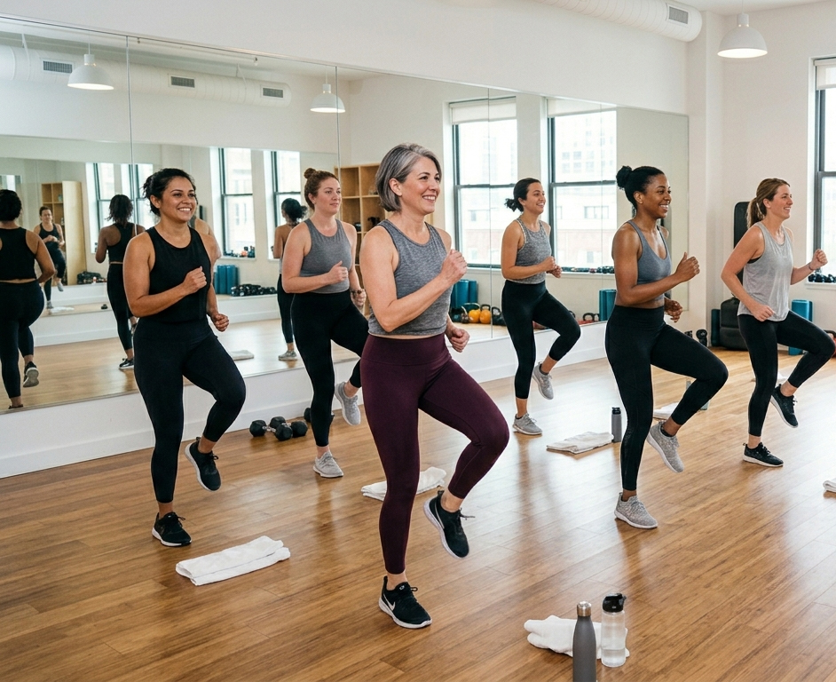

01
Guided Feminine Movement + Physical Release
We begin with guided sensual movement designed to awaken the body, open the hips and activate the pelvic area.
These movements may be inspired by belly dance, feminine flow and embodiment practices, but the focus is not choreography. The focus is connection, release and body awareness.
As the body warms, the movement becomes a physical release - supporting circulation, confidence, energy and freedom while helping women move out of their heads and into their bodies.